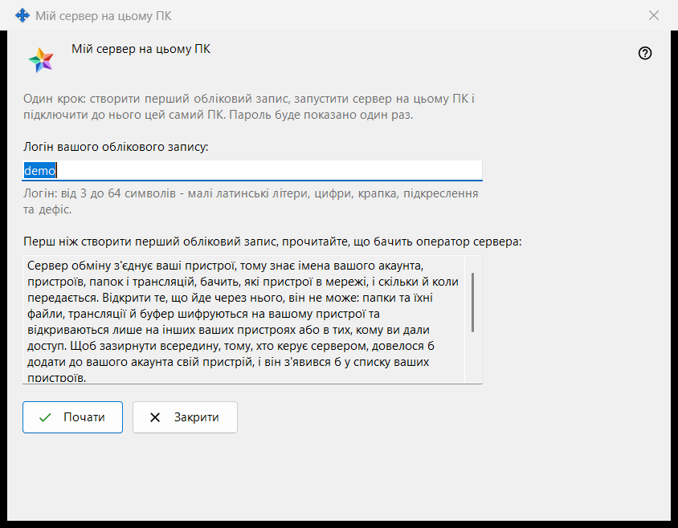
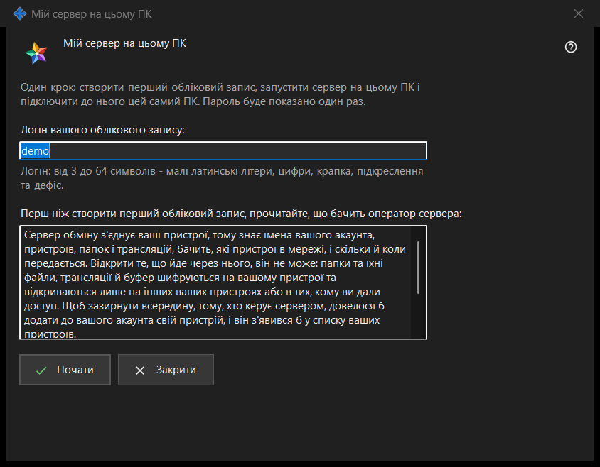

Мій сервер на цьому ПК
Призначення
Налаштовує особистий Media Exchange Server на цьому ПК за один прохід: створює перший обліковий запис, запускає сервер і підключає до нього цей самий ПК. Вікно відкривається кнопкою «Використати цей ПК як мій сервер..» на сторінці Media Exchange Server у налаштуваннях Share Manager; кнопка видима, лише коли на цьому ПК немає налаштованого сервера.


Порядок дій
- Перевірте запропонований логін, узятий з імені користувача Windows, або введіть свій.
- Прочитайте, що бачить оператор сервера.
- Натисніть «Почати» й дочекайтеся чотирьох кроків.
- Одразу скопіюйте пароль, потім відбиток або рядок підключення для інших пристроїв.
- Натисніть «Закрити».
Елементи вікна
Логін
Поле «Логін вашого облікового запису:» приймає від 3 до 64 символів: малі латинські літери, цифри, крапку, підкреслення та дефіс; великі літери перетворюються на малі. Підказка під полем набуває кольору попередження, коли текст не може бути логіном, а «Почати» нічого не робить, якщо він не підходить.
Що бачить оператор
Поле лише для читання під рядком «Перш ніж створити перший обліковий запис, прочитайте, що бачить оператор сервера:» перелічує, що оператор сервера бачить про облікові записи, пристрої, папки, трансляції та буфер обміну, чого сервер прочитати не може та скільки днів зберігаються журнали. На власному сервері оператор - це ви.
Кроки та збої
«Почати» виконує чотири кроки й називає поточний: «Створюю обліковий запис..», «Запускаю сервер..», «Перевіряю сертифікат..» та «Підключаю цей ПК..». У цей час логін заблоковано, а вікно не закривається. Якщо обліковий запис не створено, рядок пояснює причину, наприклад «Такий обліковий запис уже є - виберіть інший логін.»; виправте логін і натисніть «Почати» знову.
Підсумок і адреси
У разі успіху вікно повідомляє «Готово: сервер працює, обліковий запис створено, цей ПК підключено до нього.» і показує «Адреса для цього ПК:», «Адреса для інших пристроїв:» (якщо адресу не задано, там написано «не задано - вкажіть його в налаштуваннях сервера обміну»), «Логін:», «Пароль (показано один раз):» та «Відбиток сертифіката:». Коли адресу для інших пристроїв задано, додається «Рядок підключення:». Якщо сервер не запустився, обліковий запис усе одно створено, а його пароль показано нижче один раз.
Пароль і копіювання
Пароль приховано. «Показати пароль» розкриває його, «Скопіювати пароль» кладе його в буфер обміну захищеним шляхом: в історію буфера Windows і в хмарний буфер він не потрапляє. Вікно показує пароль лише один раз, якщо не ввімкнено «Зберігати паролі облікових записів на цьому ПК». «Скопіювати відбиток» і «Скопіювати рядок» копіюють звичайним способом: пароля в них немає. Іншим пристроям потрібні адреса, логін, пароль і відбиток, який вони звіряють під час першого підключення.
Закриття
Якщо пароль не скопійовано, не показано й не збережено на цьому ПК, «Закрити» запитує «Закрити, не скопіювавши пароль?» (за замовчуванням вибрано «Ні»), бо показати пароль знову не можна - його можна лише скинути.
Налаштування менеджера · Налаштування спільного доступу SFTP · Налаштування сервера обміну